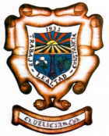

El escudo representa al municipio de Delicias que es uno de los 62 municipios del estado mexicano de Chihuahua. La bordura del escudo es color blanco plata. La inscripción del lema: Trabajo, Lealtad y Constancia. En la faja del escudo se observa, en primer término, un campo de labranza que converge en otro, los surcos tienen el color sinople o verde. Junto, aparece un sol de siete rayos de color oro. Contiene un arado denominado pony, que simboliza la agricultura y la riqueza generada por el arduo trabajo. Los rayos del sol del centro son gules o rojos, significado de ardor, energía y valor. Del vértice de la punta centro del escudo, emerge una columna griega estilizada que representa la cultura, el saber y la conciencia. En la punta diestra aparecen tres capullos de algodón, origen de la riqueza de Delicias y orgullo regional. En la punta siniestra se inscribe un racimo de uvas con hojas de la planta, como símbolo de la industrialización de este producto en forma, no sólo regional, sino estatal y nacional
|  |